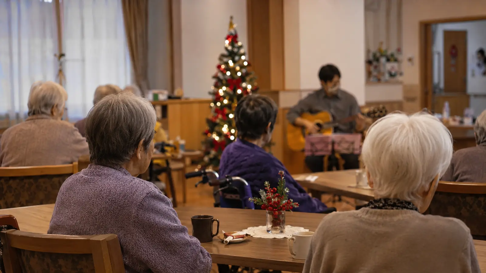

Monthly Care Report
2025年12月 (December 2025)
クリスマス、そして年の瀬の整え
12月は、楽しみと整えの両方の月。クリスマス会、大掃除、お正月準備と、入居者の方々にも参加していただきながら、施設全体が年の瀬の空気に包まれました。
Numbers
数字で見る今月
現入居者数
16名
新規ご入居
1名
活動イベント
7回
外部訪問者
22名
In Focus
今月の主な瞬間

Album
今月のひとこま


Story
今月の活動
クリスマス会
12月20日、共用ラウンジでクリスマス会を開催しました。介護スタッフの中にギター・サックス・キーボードの経験者がいたことから、スタッフバンドによる生演奏が実現。「ホワイト・クリスマス」「アヴェ・マリア」「きよしこの夜」など、入居者の方々の世代に馴染みのある楽曲を中心に演奏しました。
年の瀬の整え
12月13日には施設全体の大掃除。入居者の方々にも、ご自身のお部屋の小さな掃除に参加していただきました。「自分の家を掃除する感覚」が大事だと考えています。25日には共用空間に門松としめ縄を設置。年末年始も24時間体制で、訪問診療・看護を継続しています。
来月の予定
- 1月1日: 元旦 おせち料理
- 1月3日: 書き初め
- 1月15日: 餅つき (やわらかさ調整版で誤嚥対策も)
- 1月20日: 新年会
Care Support Pass
支援者の状況 (累計)
| 項目 | 数値 |
|---|---|
| 当施設を支援している会員数 | 1 名 |
| 累計の支援額 (2025年12月 末まで) | ¥700 |
| (参考) 月100円 × 7 ヶ月分 | ¥700 |
From the Director